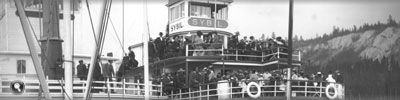
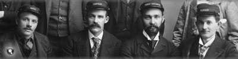
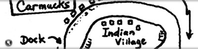
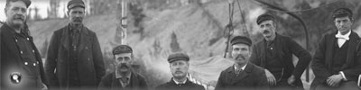
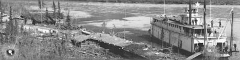
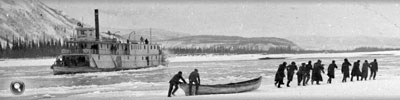
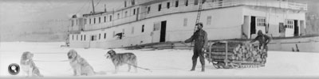
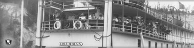

Les bateaux à aubes étaient devenus essentiels au transport au Yukon. Les bateaux de ce type qui naviguaient sur le fleuve Yukon étaient des bateaux à faible tirant d’eau conçus pour le transport de marchandises lourdes en descendant le courant et de charges plus légères au retour.
Les pilotes et les capitaines qui devaient faire franchir aux bateaux les rochers, les rapides et les autres dangers que recelait le fleuve devaient faire preuve d’une grande compétence.
Contrairement aux bateaux à roue latérale qui naviguaient dans le sud des États-Unis, les bateaux à roue arrière pouvaient naviguer sur les parties étroites du fleuve Yukon. Avec ce type de roue, il était aussi plus facile de négocier les chenaux étroits, les coudes en épingle et le courant rapide.
Leur coque relativement plate leur permettait de naviguer dans les eaux peu profondes et de mouiller presque partout sur le fleuve sans nécessiter de quai.
« Naviguer malgré les dangers »
Les capitaines de bateaux à aubes étaient confrontés à tout un éventail d’obstacles, dont des chenaux au lit changeant, des barres de sable, des récifs et des eaux peu profondes.
Du bois en grande quantité
La plupart des bateaux à vapeur du cours supérieur utilisaient le bois comme carburant. Pour remonter le courant, un bateau à aubes consommait entre une et demie et deux cordes de bois à l’heure. En descendant le courant, il ne fallait qu’une petite quantité de bois pour gouverner et faire marche arrière.
Normalement, les navires s’arrêtaient deux fois en descendant le courant, et de cinq à sept fois en remontant le courant. Des camps étaient éparpillés tout le long du fleuve, tous les 50 à 100 milles (80 à 160 km). En général, les bateaux transportaient de 10 à 20 cordes de bois à la fois, et il fallait environ une heure pour charger tout ce bois.
Le S.S. Yukoner remontant le courant à travers les rapides Five Fingers.
Archives du Yukon, Collection du Musée MacBride, nº 4062
Le capitaine à la barre du S.S. Casca.
Archives du Yukon, fonds J.P. Kingscote, 84/32 nº 15
Le S.S. Mary F. Graff et le S.S. Sybil, aucune donnée disponible.
Archives du Yukon, fonds E.J. Hamacher (collection Margaret et Rolf Hougen), 2002/118 nº 20
Portrait en atelier de l'équipage du S.S. Yukoner, réalisé le 10 octobre 1900.
Archives du Yukon, Collection du Musée MacBride, nº 4016
Batchelor, Bruce. Cartes des chenaux du fleuve Yukon, p.30.
Archives du Yukon, PAM 1996-566
Les officiers et les membres d’équipage du S.S. Bailey, vers août 1899.
Archives du Yukon, fonds H.C. Barley, nº 5194
(À gauche) Le camp Miller, sur la rivière Stewart. Les matelots chargeaient le bois à bord du bateau à l’aide de chariots à bras qui pouvaient contenir environ le tiers d’une corde de bois.
Archives du Yukon, collection de la photothèque GSC, 90/36 nº 84638
Le S.S. John C. Barr appartenant à la north American Trading and Transportation Company, à Hootalinqua, vers 1899.
Archives du Yukon, fonds Eric Hegg, nº 2689
Le S.S. Vidette, propriété de la Side Streams Navigation Company, est resté emprisonné dans la glace à l’automne, sur le fleuve Yukon, à proximité de la rivière Indian. Les passagers ont dû franchir à pied les 35 milles (56 km) qui les séparaient de Dawson; le Vidette est resté prisonnier de la glace tout l’hiver.
Archives du Yukon, fonds A.K. Schellinger, nº 5919
Personnage hâlant du bois provenant de l’épave du S.S. Dawson. Le Dawson a coulé dans les rapides Rink à l’automne de 1926.
Archives du Yukon, fonds des familles Back et Bee, 90/19 nº 171
Le S.S. Columbian, en train de recevoir un chargement de bois à l’occasion d’une excursion de l’école du dimanche au lac Laberge, le 17 juillet 1906. Deux mois plus tard, le Columbian était détruit dans une explosion provoquée par une balle égarée qui a mis le feu à son chargement d’explosifs. L’incendie a provoqué la mort de six membres d’équipage.
Archives du Yukon, fonds E.J. Hamacher (collection Margaret et Rolf Hougen), 2002/118 nº 94

Le S.S. Klondike I a coulé près de Hootalinqua en 1937. Construit en 1929 pour réduire le recours aux barges, ses 210 pieds (64 m) en faisaient le plus grand bateau à aubes à naviguer sur le cours supérieur du fleuve.
Archives du Yukon, fonds Claude Tidd, nº 8502